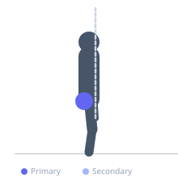
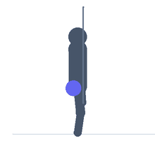

Exercise guide / Clamshell with Band — Top Leg Straight Raise
Clamshell with Band — Top Leg Straight Raise
An advanced clamshell progression that extends the top of the clamshell motion into a straight-leg hip abduction. After rotating the bent top knee as high as possible (clamshell), the exerciser straightens the knee and raises the now-extended leg further in abduction before returning. The resistance band increases the challenge throughout both phases. This combination targets the gluteus medius through its full hip abduction arc while simultaneously engaging the hip external rotators in the clamshell phase.
Primary muscles
gluteus medius
gluteus minimus
Secondary muscles
gluteus maximus
tensor fasciae latae
Stabilizers
transverse abdominis
Equipment
Resistance Band (Loop / Mini Band)


Starting position
- Lie on one side with hips stacked and knees bent to approximately 60-90 degrees. Place a resistance band loop just above both knees.
Setup
- Choose a band resistance that allows the clamshell phase at full range before the leg extension. The pelvis must not rotate at any point.
Steps
- Step 1: Begin the clamshell — rotate the top knee upward against the band as far as hip external rotation allows without the pelvis rotating.
- Step 2: At the top of the clamshell, straighten the top knee to extend the leg.
- Step 3: With the leg now fully extended, raise it slightly further in abduction against the band.
- Step 4: Lower the extended leg to the starting position, bend the knee, and return to the folded starting position. That is one repetition.
Coaching cues
- Complete the clamshell before extending the leg — the hip must be fully rotated first
- Keep the foot of the extended leg in a neutral position, not rotated
- Feel the outer hip burning — that is the target
Breathing
- Exhale as you open the clamshell. Continue exhaling through the extension and abduction. Inhale on the return.
Range of motion
- Full clamshell range before extension; abduction phase is a small additional lift after the leg straightens.
Tempo
- 2s clamshell open, 1s extend leg, 1s additional abduction, 3s full return.
Common mistakes
- Rotating the pelvis backward during the clamshell phase to gain extra range
- Straightening the leg without first reaching the top of the clamshell range
- Using a band that is too heavy, preventing full range in either phase
Safety
- If knee pain occurs during the leg extension phase, stop and assess
- Keep the pelvis stable — place a hand on the top hip to monitor for rotation
Training
- endurance: 8–15 reps
- endurance: 2–3 sets
- Rest: {'endurance': 60}